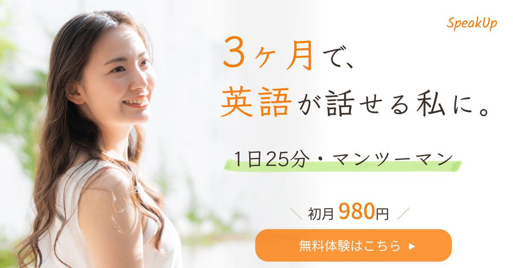

WORK

オンライン英会話 広告バナー
DESIGN
架空のオンライン英会話 広告バナー
- 目的
- オンライン英会話サービスのSNS広告を想定して制作。
サービスの魅力を一目で伝え、無料体験への申し込みにつなげることを目的としました。 - ターゲット
- 英会話に興味があり、忙しい中でも無理なく学びたい20〜30代の社会人女性。
- 工夫した点
- 「3ヶ月」「英語」「980円」が自然に目に入るよう、情報の優先順位を意識して配置しました。
明るい人物写真とオレンジを基調に、グリーンのマーカーや手書き風フォントを取り入れ、
前向きさと親しみやすさを表現しています。 - 制作期間
- 1日間
- 使用言語・ツール
- Figma